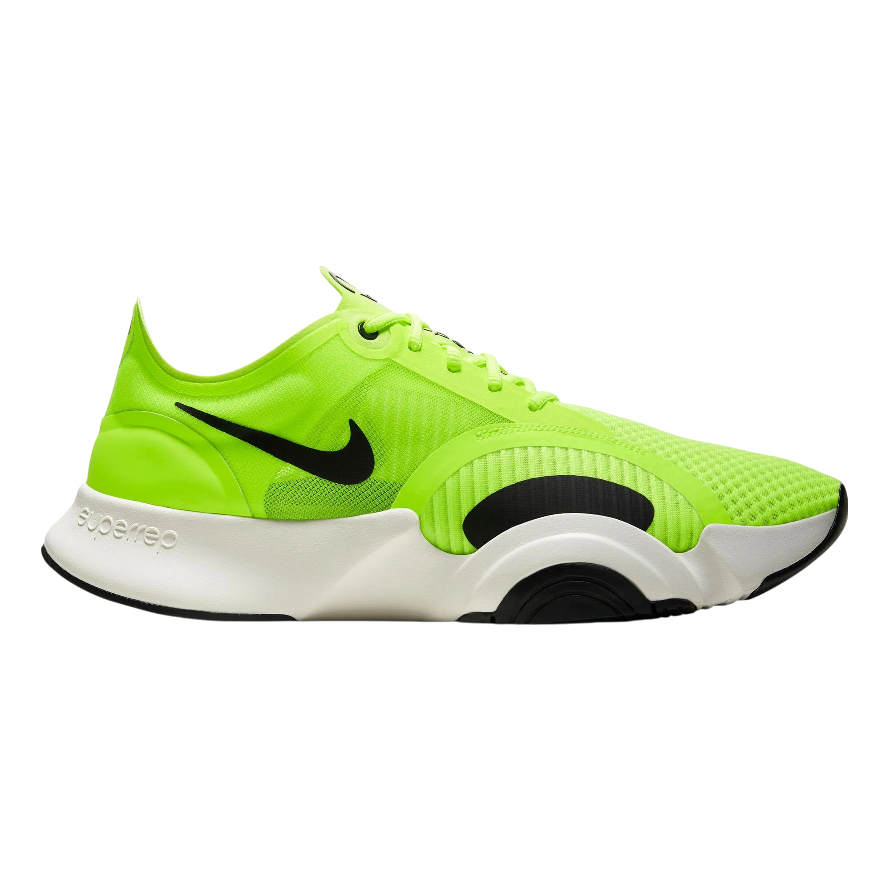

NIKE
SUPERREP
The Nike SuperRep combines lightweight cushioning underfoot and breathable mesh up top to get you moving comfortably in circuit-based fitness classes or while streaming workouts at home. With the supportive arc on the side and extra flexibility in the sole, you're ready to go for 1 more rep.
